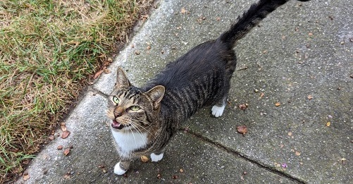
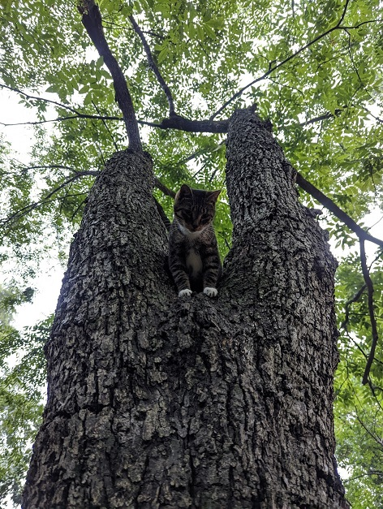
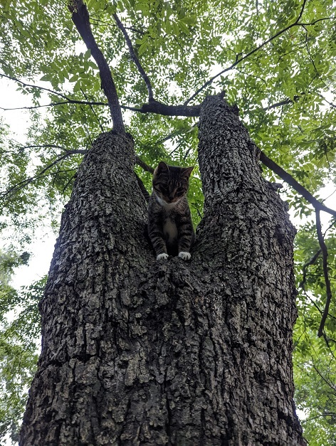

ODYSSEUS
 

-
BioOdysseus is a small tabby cat with white splotches on his fur. I call him Odysseus because he will follow me on a grand journey the length of his whole block whenever I walk by.
-
PersonalityOdysseus is very persistent in badgering passerbys to pay attention to him. Once he crossed my block to come visit me at my house, and subsequently got ran up a tree by Sid.